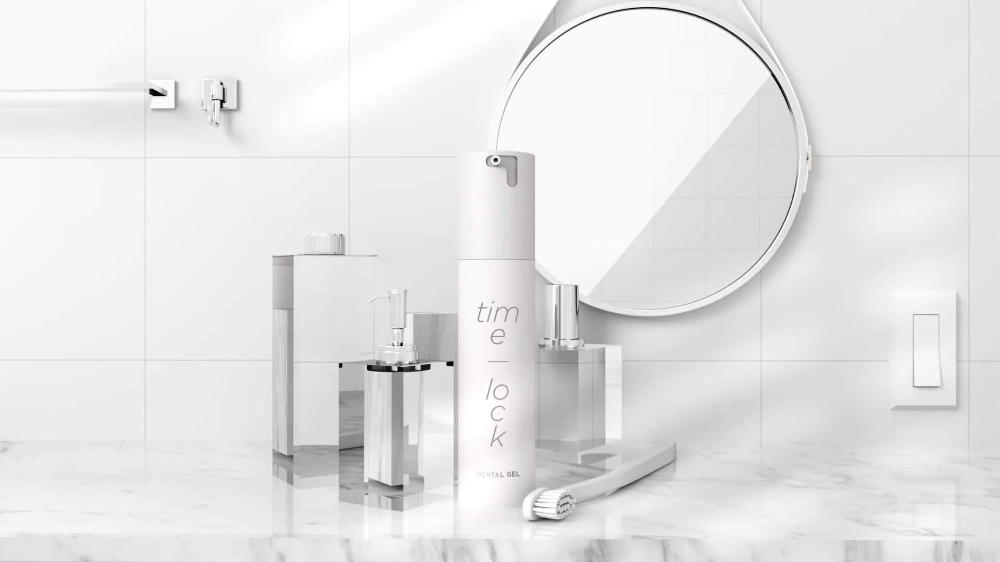
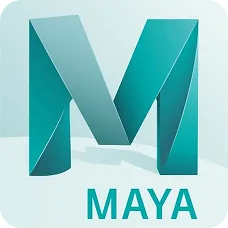
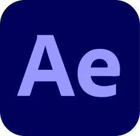

以 「潔白、純淨、現代感」 為核心，重新設計美白牙膏品牌的視覺形象影片。
保留產品「牙齒亮白」的功能訴求，透過更簡潔且具有空間感的視覺語言，建立高質感、年輕化的品牌印象。
美術風格採用極簡幾何場景與低彩度空間設計，以局部亮色點綴，用黃色光束象徵亮白效果與產品能量，讓功能訴求更具視覺記憶點。
鏡頭語言透過產品特寫、材質層次與動態構圖，強化 premium 感與現代生活風格，提升整體品牌溝通的一致性與吸引力。

專案細節
產品 /TimeLock 美白牙膏
分類 /3D 動畫影片
地點 /台灣 台北市
年份 /2021
負責項目
3D 建模
場景打光
材質渲染
影音剪輯
工具使用
無 AI 工具介入

